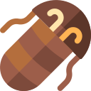
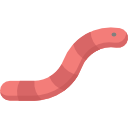
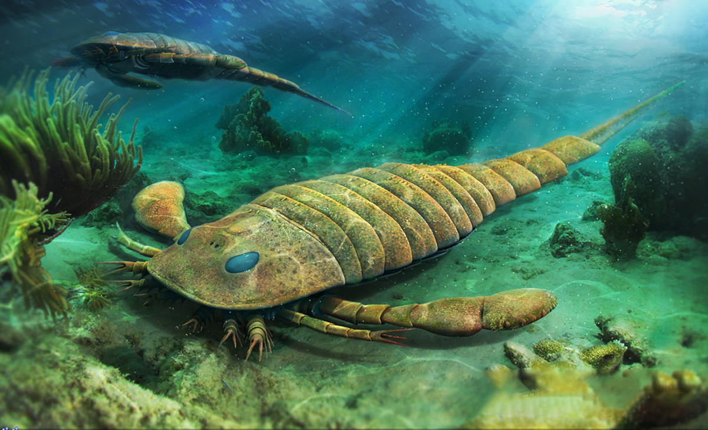
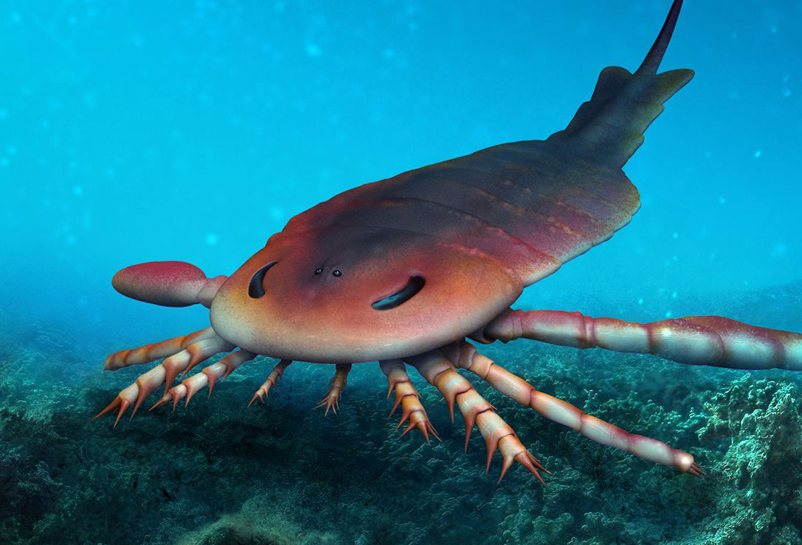
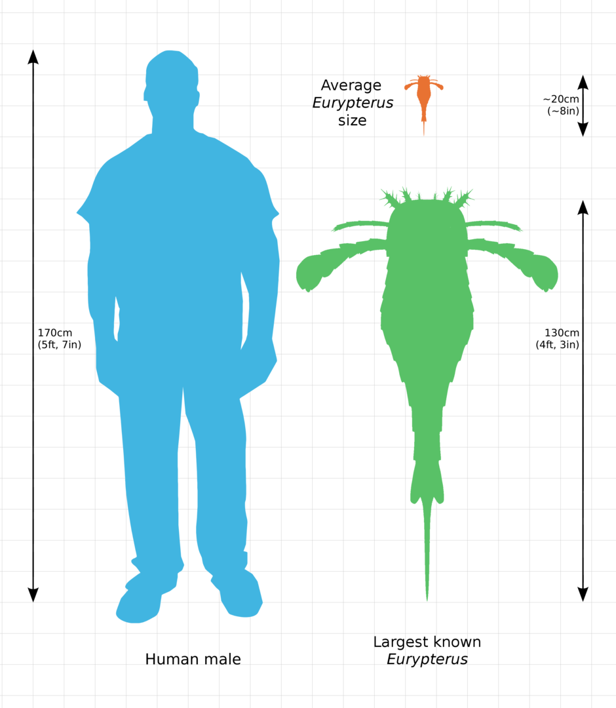
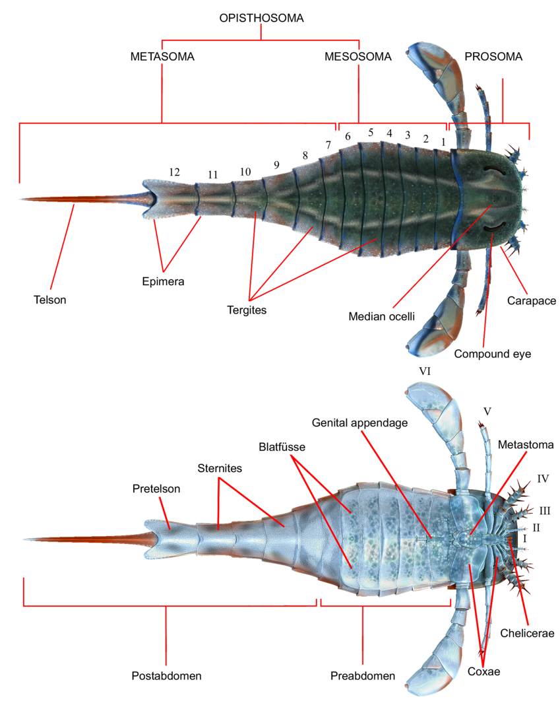
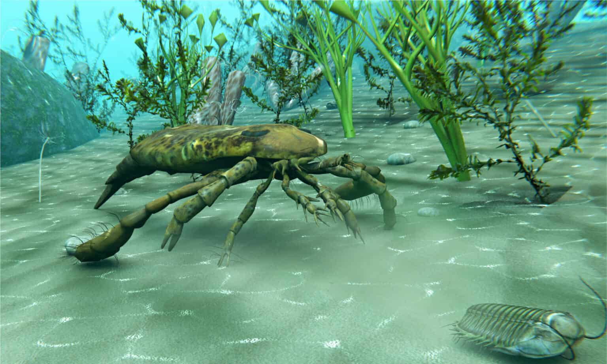
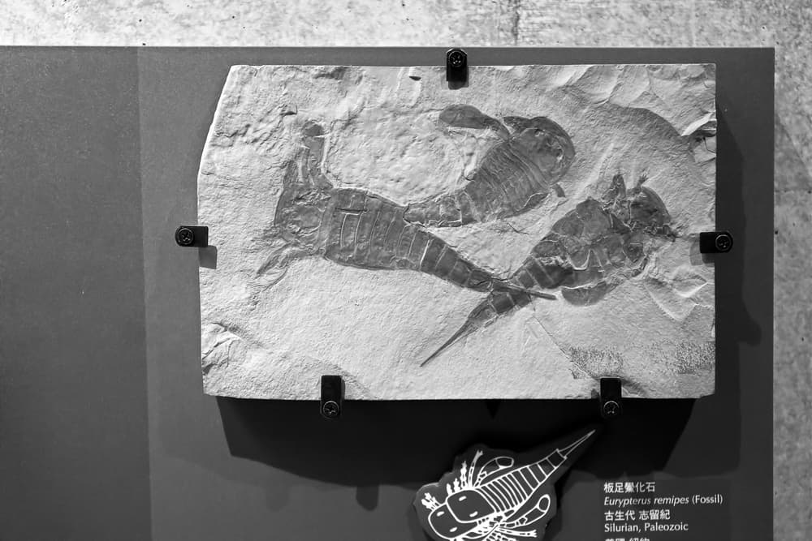

Eurypterus
Bọ Cạp Biển kỷ Silur
Tổng quan
Kỷ
Silurian
Họ
Eurypteridae
Chi
Eurypterus
Dài
1.3 m
Thức ăn
 
Eurypterus là một chi bọ cạp biển thuộc họ Eurypteridae đã từng tồn tại vào thời kỳ Silurian. Eurypterus là thành viên phổ biến nhất của nhóm Eurypteridae, chiếm 95% mẫu vật được phát hiện cho đến nay. Loài bọ cạp biển đã tuyệt chủng này là họ hàng của cua hoàng đế hiện đại nhưng trông khác biệt đáng kể và lớn hơn đáng kể.
Nguồn: wikipedia.org
Phân bố
Khu vực biển Bắc Mỹ
Thông tin thêm về Eurypterus
Kỷ nguyên và phân bố
Eurypterus là một động vật chân đốt sống ở biển cổ đại. Hầu hết các phần còn lại của loài động vật này được tìm thấy cho đến nay đều được tìm thấy trong môi trường sống bãi triều nông. Nhiều hóa thạch của sinh vật này đã được phục hồi ở New York, điều này cho thấy rằng khu vực này là phạm vi chính của chúng.
Trong thời kỳ Silurian, khi họ sinh sống, toàn bộ khu vực này được bao phủ bởi một vùng biển cổ xưa. Phần đất liền của trái đất vào thời điểm đó được kết nối thành hai siêu lục địa Gondwanaland và Laurussia. Nhóm sinh vật này xâm chiếm một khu vực của Laurussia được gọi là Euramerica.
Tên khoa học
Cái tên Eurypterus được đặt bởi nhà động vật học người Mỹ James Ellsworth De Kay năm 1825. Eurypterus từ tiếng Hy Lạp εὐρύς ( eurús 'rộng') và πτερόν ( pteron 'cánh') có nghĩa là "Cánh rộng" hoặc "Mái chèo rộng", đề cập đến chân bơi của chúng.
Kích thước
Loài nổi tiếng nhất trong chi này là Eurypterus Remipes, còn được gọi là bọ cạp biển khổng lồ. Trung bình, các thành viên của chi này có chiều dài trung bình từ 13 đến 20 cm (5 đến 9 inch). Tuy nhiên, mẫu vật lớn hơn nhiều đã được phát hiện. Một loài khác trong chi, Eurypterus Lacustris, có chiều dài trung bình từ 15 đến 23 cm (6 đến 9 in). Mẫu vật lớn nhất của Eurypterus được ghi nhận có chiều dài 1,3 m (4,3 ft).
Ngoại hình
Cơ thể của Eurypterus thường được chia thành hai phần. Prosoma, phần phía trước của cơ thể chúng, bao gồm sáu đoạn. Đầu và ngực hợp nhất thành các đoạn. Phần thứ hai, được gọi là opisthosoma, tạo thành bụng của nó. Nó bao gồm 12 phân đoạn với các tấm trên và dưới hợp nhất. Euryptous cũng có một phần phụ giống như đuôi được gọi là telson. Chúng có sáu cặp phần phụ. Cặp đầu tiên biến đổi thành càng trông giống như càng của bọ cạp. Họ sử dụng những chiếc kìm này để đưa thức ăn vào miệng. Các phần phụ còn lại được sử dụng để di chuyển, với cặp cuối cùng được biến đổi thành các chi phẳng giống như mái chèo, chúng dùng để bơi lội.
Eurypterus và các loài Eurypterids khác được gọi là bọ cạp biển chủ yếu là do đuôi và càng của chúng giống như kim chích. Tuy nhiên, điều quan trọng cần lưu ý là chúng không sử dụng chiếc đuôi này để truyền nọc độc như bọ cạp. Ngoài ra, càng của Eurypterus được hình thành từ bộ phần phụ đầu tiên của chúng, nhưng ở bọ cạp, chiếc càng của chúng thực sự là cặp phần phụ thứ hai trên cơ thể chúng.
Chế độ ăn và săn mồi
Eurypterus được coi là những sinh vật theo chủ nghĩa tổng quát. Các nhà khoa học tin rằng chúng vừa là động vật ăn thịt vừa là động vật ăn xác thối. Chúng có khả năng săn bắt các động vật không xương sống nhỏ, thân mềm như giun sống ở vùng nước kỷ Silurian. Các nghiên cứu về phân hóa thạch được cho là thuộc về loài động vật này tiết lộ rằng chúng thích ăn Bọ ba thùy Trilobita.
Rất có thể chúng đã sử dụng hàng gai trên các phần phụ giống như gọng kìm để giữ và giết con mồi trước khi xé chúng thành những mảnh nhỏ hơn để chúng có thể nuốt chửng. Eurypterus không phải bơi để săn mồi. Rất có thể nó đi dưới đáy biển khi săn mồi và chỉ bơi từ nơi kiếm ăn này sang nơi kiếm ăn khác.
Khám phá
Nhà cổ sinh vật học SL Mitchhill đã phát hiện ra những hóa thạch đầu tiên của Eurypterus vào năm 1818. Các hóa thạch nằm trong Hệ tầng Bertie gần Westmoreland ở Hạt Oneida, New York. Ban đầu, Mitchhill cho rằng hóa thạch thuộc về một loài cá da trơn đã tuyệt chủng . Nhiều năm sau, nhà động vật học James Ellsworth De Kay đã xác định chính xác nó là một loài động vật chân đốt và đặt tên cho hóa thạch là Eurypterus. Hầu hết các hóa thạch eurypterid được phát hiện là từ các thành tạo ở New York, đến nỗi Thống đốc Mario Cuomo đã chỉ định Eurypterus remipes là hóa thạch chính thức của bang.
Các mẫu vật từ Estonia được bảo quản tốt nhất. Hầu hết các phát hiện đều giữ lại bộ xương ngoài thực tế của chúng và việc nghiên cứu chúng cung cấp những hiểu biết sâu sắc về hình thái học của các sinh vật trong chi. Hầu hết các hóa thạch của Eurypterus được tìm thấy cho đến nay là các bộ xương ngoài rời rạc do các sinh vật này lột xác trong quá trình lột xác. Hóa thạch thực tế rất hiếm.